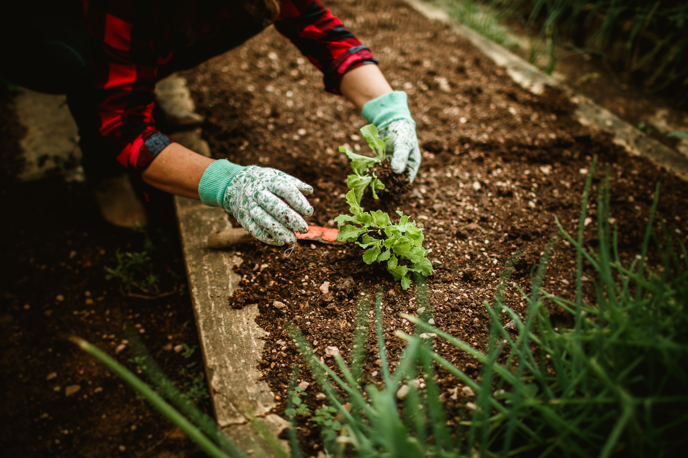
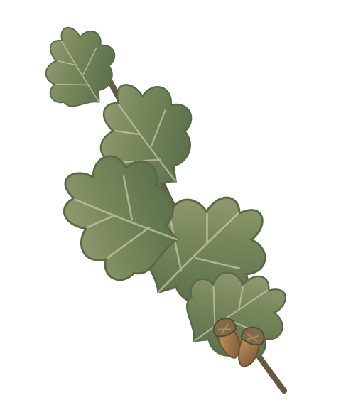

Platz für Vereinsmomente
Fotos werden nachgereicht.
Neuigkeiten aus dem Verein
Hier informieren wir künftig über aktuelle Themen und Neuigkeiten aus dem Vereinsleben.
DRECK AN DEN HÄNDEN.
Willkommen bei unserem Kleingartenverein. Hier entsteht der neue Internetauftritt von „An der Eiche“.
Den Verein entdecken

Das Vereinsleben
Hier informieren wir künftig über aktuelle Themen und Neuigkeiten aus dem Vereinsleben.
Sobald die Termine feststehen, findest du hier Veranstaltungen und gemeinsame Arbeitseinsätze.
Termine folgenFreie Gärten
Du interessierst dich für einen Kleingarten? Hier stellen wir künftig verfügbare Gärten mit Bildern und weiteren Informationen vor.
Kontakt zum VereinGut zu wissen
Die freigegebenen Kontaktdaten, Informationen zur Anfahrt und Vereinsdokumente ergänzen wir hier im nächsten Schritt.